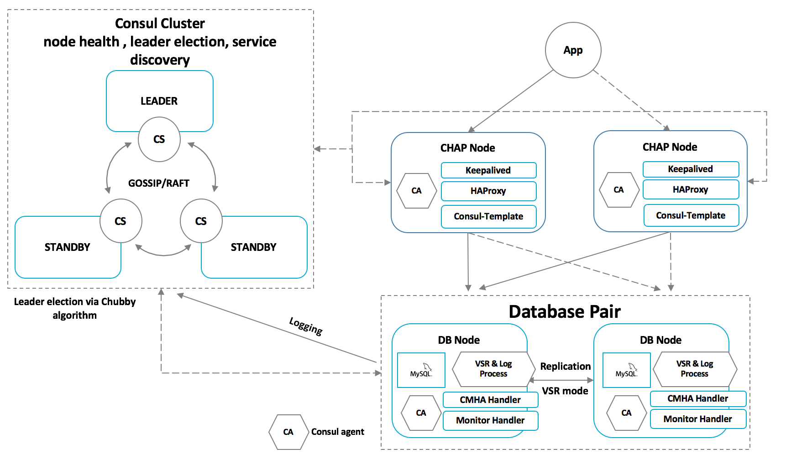

Welcome to CMHA Project.
"CMHA" stands for Consul based MySQL High Availability. It is a MySQL high availability cluster designed by BSG database engineer team and developer team base upon light weight consul technology and a variety of mature open source technologies. We built this open source project for use cases and scenarios like online financial transaction system or realtime telco data processing platform which needs higher availability and strong data protection with MySQL as the backend database.
History of CMHA
We learned almost all the exists solutions on MySQL HA from Oracle NDB/Fabric, Youshimaton's MHA, facebook and google's offering as well as Chinese big player like Alibaba/Tencent/Qihoo360/...'s and failed to find a right one to meet our customers' hight availability requirement. So we decided to build one.
This project was created in March 2015 and reached it's 1.0 at the end of 2015. After a dozen of challenges and iteration we finally have this reliable, light weight, easy to deploy and manage clustering solution for MySQL and for mission critical use cases.
We finished implementation of the core of CMHA and keep completing the toolkits around CMHA from 1.0 to the latest release in 2016. And have real deployment and install base for banks, insurance and securities.
What we can't found from exists solutions?
- Most of existing solutions are MySQL Sharding solution plus failure detection/failover functions with limited availability and data protection capability.
- Most of existing solutions are complex, some need external platform supervise serivce, not self-consistence enough for mission critical scenarios.
- Most of existing solutions are not balancing service availability and data security well. Especially when using MySQL 5.6 with semi-sync there is no extra protection for consistence.
- Most of them are built for eCommerce use cases but not financial/telco mission critical scenarios. They are significant differences even if both of them are leveraging the same database technology which is - MySQL.
Features of CMHA
- Written in Golang, light weight and very easy to deploy as well as upgrade.
- No single point of failure design and strong data consistence, no data lose, no transaction mess.
- Consul cluster maintains multiple HA groups for different applications.
- Prevent network partition and MySQL nodes brain-split.
- Stateless agent design with Run-As-Needed failure handler and health monitoring handler.
- Interactive command line(CLI) console for DBA's troubleshooting and maintenance.
- Clear and elegant web UI for status monitoring (embedded web service, no need for additional web server).
- RESTFul interface for external automation ops tools/platform.
- User-friendly and customizable deployment scripting
- Upgrading on the fly
Architecture of CMHA
